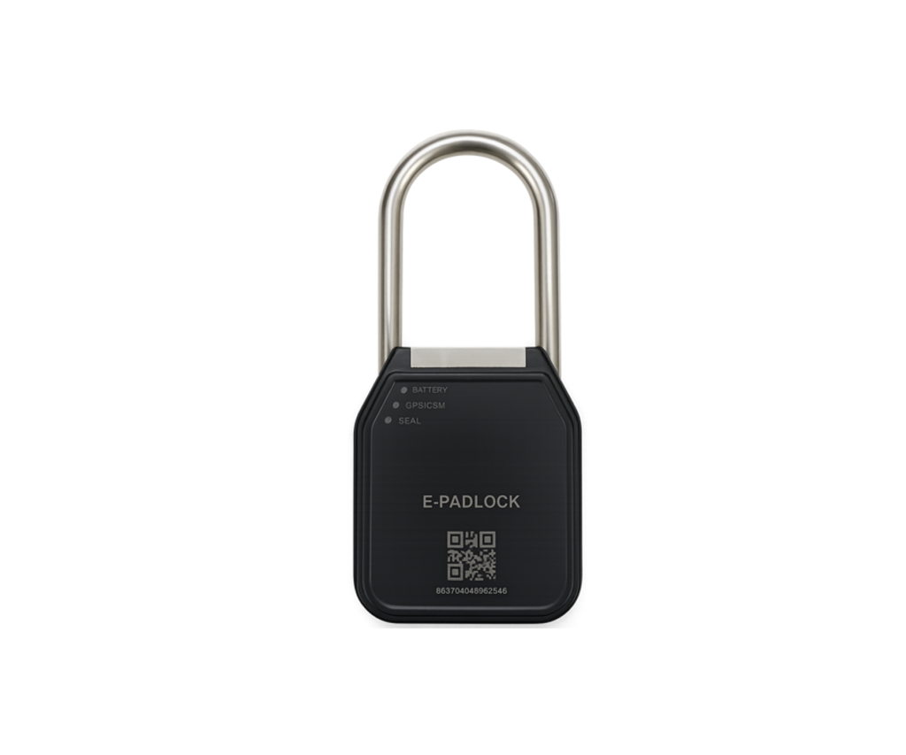

E-Padlock — это умный навесной замок с GPS-трекером для защиты грузов в международных перевозках, объединяющий криптографическую защиту, системы мониторинга и автономное питание. Корпус из закаленной стали с антикоррозийным покрытием и водонепроницаемой конструкцией обеспечивает работу в экстремальных климатических условиях. Замок открывается исключительно зашифрованной NFC-картой с криптографической защитой и многоуровневой аутентификацией, проверяющей подлинность карты и права доступа пользователя. Встроенный GPS-трекер обеспечивает непрерывное отслеживание с точностью до 3 метров, датчики вибрации, удара, акселерометр и гироскоп фиксируют любые попытки взлома и несанкционированного воздействия, мгновенно передавая сигналы тревоги в централизованную систему мониторинга. Автономная литиевая батарея работает до 2 лет без замены, встроенная память фиксирует все события доступа с временными метками, геозоны настраивают автоматические уведомления при выходе за пределы маршрута, а резервные спутниковые каналы обеспечивают связь в отдаленных регионах.
E-Padlock специально разработан для международных грузоперевозок с высокими требованиями к безопасности, интегрируясь с логистическими платформами для автоматического отслеживания цепочки поставок. Веб-платформа предоставляет диспетчерам инструменты для мониторинга всего парка замков в режиме реального времени с различными уровнями доступа для администраторов, операторов и водителей. Система отправляет push-уведомления владельцу груза при любых нештатных ситуациях и формирует автоматические отчеты для страховых компаний и таможенных служб с детализацией маршрута. E-Padlock обеспечивает максимальную защиту ценных грузов с полным контролем цепочки поставок от отправителя до получателя.
